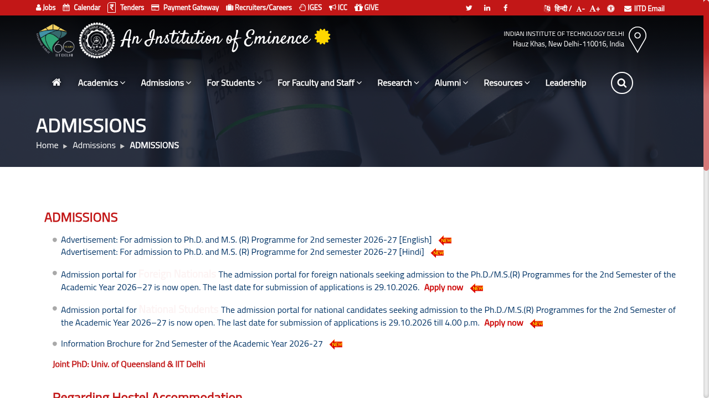
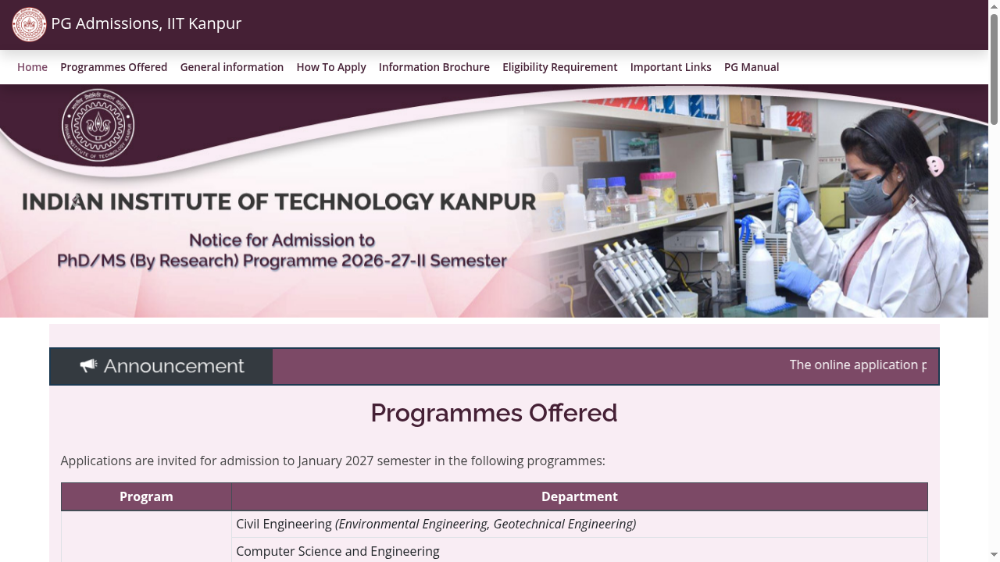
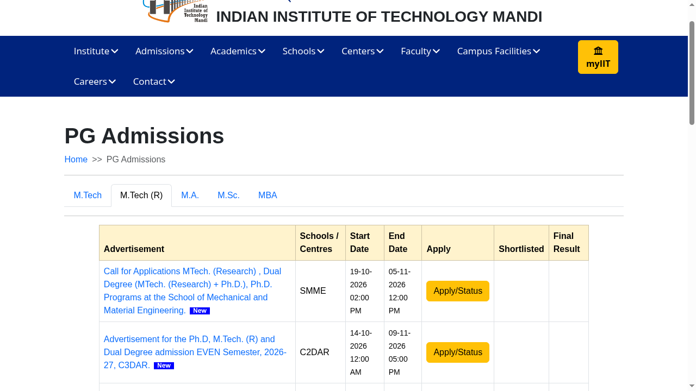
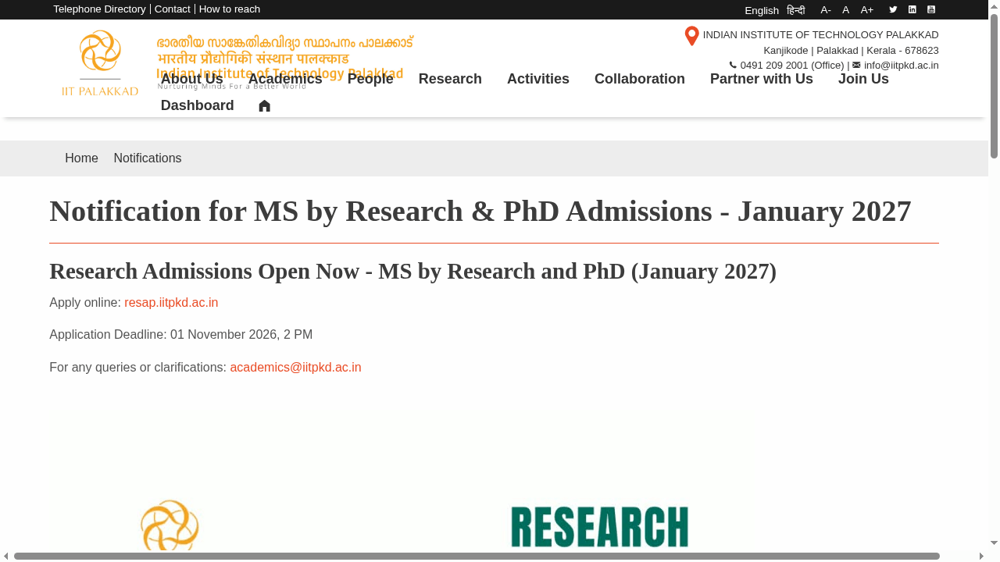
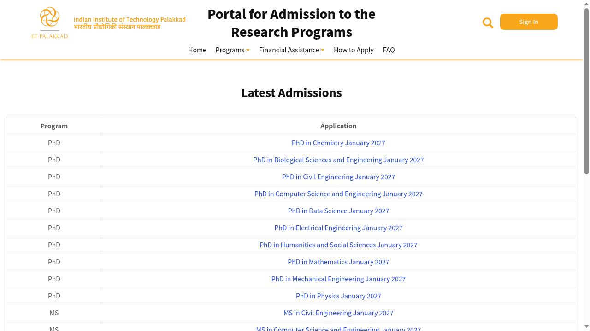
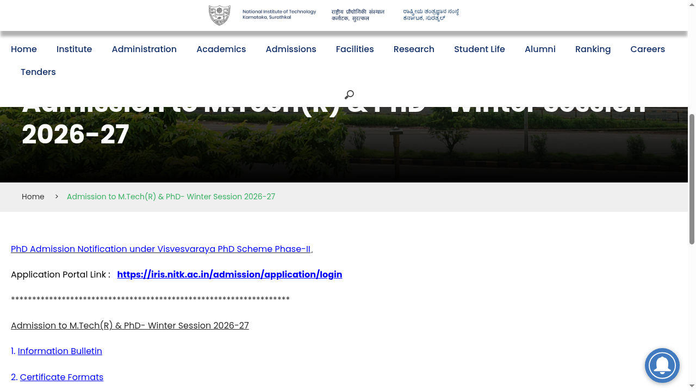
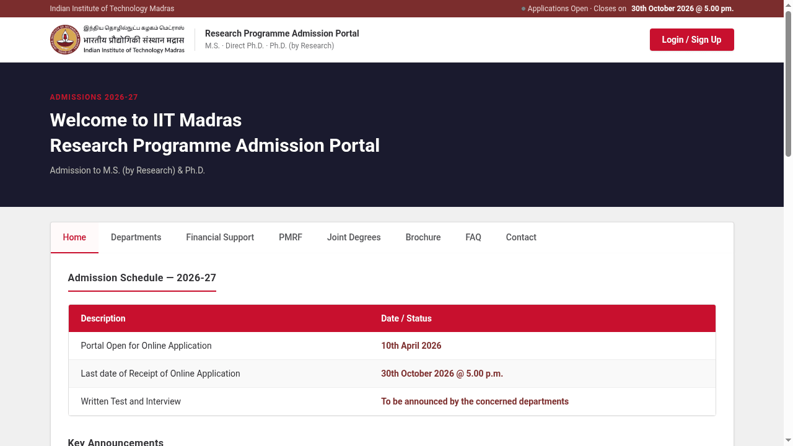
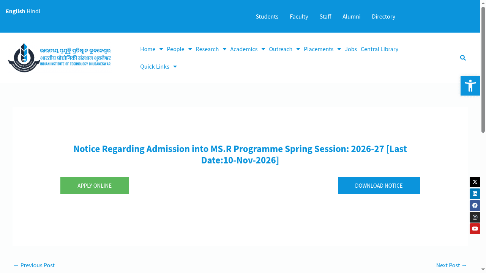
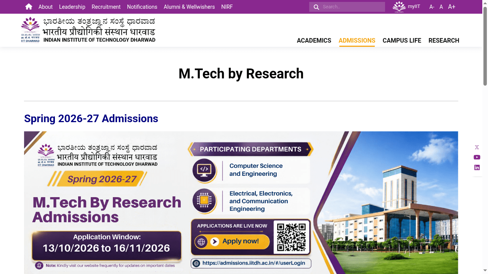
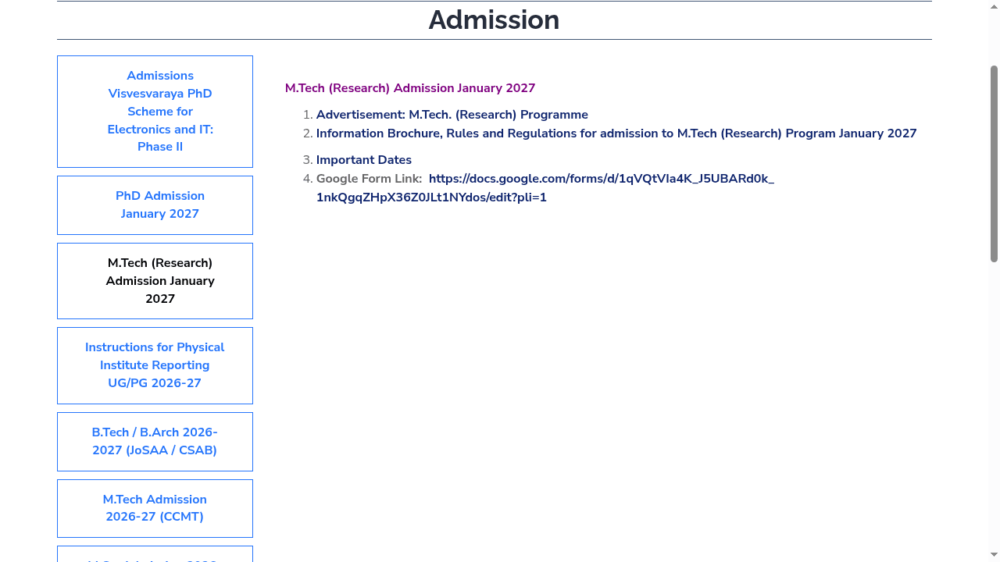

Winter research admissions 2026-27: IIT MS and M.Tech (Research) deadlines, verified
A forwarded list of winter 2026-27 research admissions (January 2027 session) is doing the rounds. We checked every item against the official institute pages on 21 October 2026. Most of it holds up, one entry mixes up different calls, and one deadline (IIT Palakkad) was only confirmed on a later check of the institute's own notification page. We have since added four more open IIT and NIT calls found on official pages: IIT Madras, IIT Bhubaneswar, IIT Dharwad and VNIT Nagpur (sections 6 to 9).
1. IIT Delhi - MS (Research), January 2027
Verified. The official IIT Delhi admissions page confirms the portal is open for Ph.D. and M.S.(R) programmes for the 2nd Semester of the Academic Year 2026-27 (the January 2027 session), for both national candidates and foreign nationals.
- Deadline: 29 October 2026, 4:00 PM
- Official page and online application: home.iitd.ac.in/pg-admissions.php
Programme, units and areas (from the 2026-27 second-semester advertisement and information brochure). IIT Delhi invites applications for Ph.D. and M.S. (Research), full time and part time, subject to seat availability. The advertisement lists 19 M.S.(R) units (the brochure lists 20 and marks Biochemical Engineering and Biotechnology as not offered this semester), including Electrical Engineering; Computer Science and Engineering; the School of Information Technology; the Bharti School of Telecom Technology and Management; Machine Intelligence and Data Science; VLSI Design Tools and Technology; Sensors, Instrumentation and Cyber-physical Systems Engineering; Optics and Photonics; Healthcare Technology; and the civil, mechanical, chemical, energy, materials and applied mechanics units. M.S.(R) in Computer Science and Engineering is limited to candidates with a qualifying degree in CSE, EE, IT, Electronics and Communication or related maths, statistics and MCA backgrounds, and needs GATE in CS or IT.
Electronics and AI research areas the brochure lists (areas of research, not confirmed vacancies). Electrical Engineering: Materials, Devices, Circuits and Systems (logic, memory and VLSI; sensors, detectors and photonics; MEMS, sensors and bio-electronics; analog, digital and mixed-signal circuits; nano and quantum technology; energy and power devices); Power Engineering (machines and drives, power electronics, power systems, EV chargers, renewables); Communication Engineering (signal, speech and image processing, coding, optical and wireless communication, 5G and 6G); Computer Technology (vision, embedded systems, machine learning, NLP, biomedical signal processing). Computer Science and Engineering: algorithms and complexity, AI and ML, NLP, databases and data analytics, architecture and embedded systems, among others. School of Artificial Intelligence: machine learning, data mining, computer vision, NLP, AI and robotics, mathematical foundations, AI on the edge and applied AI.
Terms. Eligibility: CGPA 6.0 or 60% (5.5 or 55% for SC/ST/PwD); GATE or a national exam is needed for full-time admission, with a waiver for some CFTI graduates. Application fee Rs 200 (General/OBC/EWS), Rs 50 (SC/ST/PwD). Applications opened 9 October 2026; correction window 30 October to 1 November 2026. Financial assistance for full-time students follows the brochure; the advertisement gives no figure. The advertisement and brochure publish no seat numbers for M.S.(R). Official files linked from the admissions page: advertisement 2026-27 (2nd semester) · information brochure 2026-27 (2nd semester).

2. IIT Kanpur - MS (by Research), January 2027
Verified. The official Dean of Academic Affairs page invites applications for the January 2027 semester. MS (by Research) is offered in Computer Science and Engineering and Intelligent Systems, among other departments.
- Deadline: 3 November 2026, 2:00 PM (portal open 16 October to 3 November 2026)
- Application fee: Rs 500 (General/EWS/OBC/OBC-NCL), Rs 250 (SC/ST/DAP); waived for foreign nationals
- Institute assistantship: Rs 12,400 per month for about 8 hours of assigned work per week, for regular (non-sponsored) students. A valid GATE score or JRF is required for the assistantship; the GATE requirement is waived for BTech/BS (4-year) graduates from IITs with the specified CPI.
- GATE papers accepted for MS(R) shortlisting: CSE - CS, DA, MA, ST, EE, EC (per the CSE department page); Intelligent Systems - CS, EC, ME, ST, DA, MA, XH (paper C1) (per the Department of Intelligent Systems page).
- Final-year students completing their programme by 4 January 2027 may apply for provisional admission.
- Departments and areas. The official PG page lists MS (by Research) in Civil Engineering (Environmental and Geotechnical), Computer Science and Engineering, Electrical Engineering, Intelligent Systems, Mechanical Engineering and Photonics Science and Engineering. MS (Research) in Cybersecurity is only for sponsored, part-time or external candidates, with no assistantship. For electronics, the Electrical Engineering department's MS(R) specialisations are Control and Automation; Microelectronics and VLSI; Optoelectronics and Optical Communication; Power Engineering; RF and Microwaves; and Signal Processing, Communication and Networks. EE selection uses marks/CPI, GATE and an interview (MS(R) interviews on 2 December 2026, in person). The official pages give no seat or vacancy numbers. Source: IIT Kanpur EE admissions.
- Official pages: iitk.ac.in/doaa/pgadmission · CSE MS(R) admissions · Intelligent Systems MS admissions

3. IIT Mandi - M.Tech (Research), January 2027: six separate calls, not one
Partly verified, with a correction. The forward lists one M.Tech (Research) entry with a 2 November deadline and a set of AI research areas. The official IIT Mandi admissions page instead shows six separate school and centre calls for the January 2027 (even) semester, each with its own deadline and its own research areas:
- Centre for Artificial Intelligence and Robotics (CAIR): closes 30 October 2026, 5:00 PM. Published areas focus on drone, mobile, underwater and healthcare robotics, multi-robot systems and related topics - not the generic machine learning / computer vision / LLM list in the forward.
- Centre for Human-Computer Interaction (CHCI): closes 2 November 2026, 5:00 PM (this is where the forward's 2 November date comes from)
- School of Civil and Environmental Engineering (SCENE): closes 3 November 2026, 5:00 PM
- School of Computing and Electrical Engineering (SCEE): closes 4 November 2026, 5:00 PM
- School of Mechanical and Material Engineering (SMME): closes 5 November 2026, 12:00 PM
- C2DAR: closes 9 November 2026, 5:00 PM
CAIR in detail (the one advertisement we could read in full). M.Tech (by Research), PhD and Dual Degree (M.Tech + PhD), full or part time. Specialisations: drone robotics, mobile robotics, underwater robotics, healthcare robotics, multi-robot systems, robot perception, social robotics, humanoid robotics and security of cyber-physical systems. Example topics include resilient micro-drone swarms with VLSI sensing, drone navigation in GPS-denied settings with deep-learning vision, and AI-based medical imaging. These are research areas, not confirmed vacancies: the advertisement gives no seat numbers and tells applicants to contact faculty. Institute or MoE scholarship (HTRA) applies to M.Tech (R) applicants with a CFTI B.Tech at CGPA 7.5 (General), 7.0 (OBC-NCL) or 6.5 (SC/ST/PwD), or a non-CFTI degree with a valid GATE score. Fee Rs 200 (General/EWS/OBC), Rs 100 (women/SC/ST/PwD). CAIR advertisement (PDF). The SCEE call (computing and electrical) links only to a separate SCEE admissions site that we could not load, so read its areas and eligibility there.
Pick the call that matches your area from the official table and read that call's own advertisement before applying. Official page: iitmandi.ac.in/admissions/pg-admissions · Application portal: iitmandiadm.samarth.edu.in

4. IIT Palakkad - MS (by Research), January 2027
Verified. IIT Palakkad's official notification for MS by Research and PhD admissions (January 2027) states "Application Deadline: 01 November 2026, 2 PM", with online applications at the research admissions portal. The portal lists live January 2027 applications for MS in Computer Science and Engineering and MS in Data Science, alongside other MS and PhD programmes.
Deadline: 1 November 2026, 2:00 PM. Queries: academics@iitpkd.ac.in, as given in the notification. Neither the notification nor the public part of the portal gives department-wise research areas, seat numbers or funding terms, so read the programme details inside the portal before applying.
Official pages: IIT Palakkad notification (January 2027) · resap.iitpkd.ac.in


5. NITK Surathkal - M.Tech (Research), Winter Session 2026-27
Verified. The official information bulletin for M.Tech (Research) and PhD winter session 2026-27 admissions confirms:
- Online application and fee payment: on or before 1 November 2026
- Hard copy of the application with fee receipt and documents must reach NITK by 5 November 2026 - a second, physical deadline that is easy to miss
- Written test and technical interview (offline at NITK): 30 November - 2 December 2026
- Provisional selection list: 11 December 2026; fee payment and reporting: 14-17 December 2026
- Application fee: Rs 500 (OC/OBC/EWS), Rs 150 (SC/ST/PwD)
- Official pages: NITK winter session admissions page · Information bulletin (PDF) · Apply on the IRIS portal

Programmes and areas (M.Tech Research specialisations in the bulletin). Computer Science and Engineering: Computer Science, Information Security. Electrical and Electronics Engineering: Power and Energy Systems, Power Electronics and Control, plus a Photovoltaics seat type for BGSW-sponsored candidates only. Electronics and Communication Engineering: VLSI Design, Communication Engineering and Networks, Signal Processing and Machine Learning. Information Technology, Mechatronics, and Mathematical and Computational Sciences (Computational and Data Science) are also listed, among other departments. Eligibility is a qualifying degree in the matching branch with CGPA 6.5 or 60% (General/OBC/EWS), 6.0 or 55% (SC/ST/PwD). Scholarship (full-time) seats need a valid GATE score; sponsored and part-time categories are also open.
Seats. The bulletin states an official intake for M.Tech (Research) for the winter session of 38 seats in total (OC 15, EWS 4, OBC-NCL 10, SC 6, ST 3) across all departments. It does not split them by department or specialisation, and it excludes QIP and Navy seats. Treat the 38 as the institute-wide total, not as vacancies in any one specialisation.
6. IIT Madras - MS (by Research), January 2027
Verified. The official IIT Madras research admission portal and the admission brochure (updated 10 September 2026) invite applications for M.S. (by Research) and Ph.D. for the January 2027 session. Applications are online only; no hard copy is accepted.
- Deadline: 30 October 2026, 5:00 PM. The department then calls shortlisted candidates for a written test and interview or an interview; dates are published on each department's own website.
- Application fee: Rs 1,000 (General/EWS/OBC-NCL male and transgender), Rs 500 (General/EWS/OBC-NCL female, SC/ST, PwD). Apply to more than one department and you pay separately for each.
- Assistantship: MS (by Research) scholars under the regular scheme get an institute fellowship of Rs 12,400 per month for the first 2 years, plus 6 more months on the guidance committee's recommendation. It is a half-time assistantship (8 hours of departmental work per week).
- Eligibility (M.S. in Engineering): a B.Tech/B.E. or a recognised 4-year B.Sc/BS from an IIT, CFTI or UGC-recognised institute, or a relevant Master's degree, with a valid GATE score. B.Tech/B.E./4-year BS holders from CFTIs with CGPA 8.0 or above can apply without GATE. Candidates without GATE are considered only for the external or project (non-assistantship) categories.
- Seats: the brochure does not publish seat or vacancy numbers. Selection is by each department's own test and interview.
Research areas the brochure lists for electronics, electrical and AI-related departments (these are areas of research, not confirmed vacancies):
- Electrical Engineering (Master's in Electrical, Electronics, Communication or Instrumentation Engineering, or Sciences, with valid GATE): Communication Systems (wireless communications, information theory and coding, DSP algorithms, speech, image processing and computer vision); Control (including robotics, VLSI architectures for robotics, FPGA-based design); Electrical Drives and Power Electronics; Instrumentation (bio-medical, sensors and signal conditioning); Microelectronics and MEMS (devices, power MOSFETs, HEMTs, nanoelectronics, MEMS sensors, BioSensors, microfluidics); Power Systems and High Voltage; RF, Optics and Photonics; Integrated Circuits and Systems (analog, RF and mixed-signal IC design, digital architectures for image processing and vision, CAD, reconfigurable computing).
- Computer Science and Engineering: automata and algorithms, cryptography; software engineering, parallel and distributed systems, mobile computing; software for VLSI design, computer architecture, graphics; networks, network security, real-time systems, wireless sensor networks; databases, data mining, AI, machine learning, speech and vision systems, neural networks.
- Data Science and Artificial Intelligence: basic research in deep learning, reinforcement learning, physics informed machine learning and computational mathematics; applied research in responsible AI, deployable AI, smart cities and transportation, systems biology and healthcare, network analytics, manufacturing and financial analytics. The MS in Data Science and AI accepts any 4-year UG degree from IITs/CFTIs/UGC/AICTE institutes (or a Master's degree after a 3-year degree) with a valid GATE score in any discipline.
Official pages: IIT Madras research admission portal · Admission brochure (PDF)

7. IIT Bhubaneswar - MS (by Research), Spring Session 2026-27
Verified. The official IIT Bhubaneswar notice and its advertisement PDF invite online applications for the MS (Research), or MS.R., programme. It is a two-and-a-half-year (5 semester) programme.
- Application window: 12 October to 10 November 2026. No hard copy is to be sent.
- Specialisations advertised: Mechanical Engineering; Civil Engineering; Electrical Engineering; Electronics and Communication Engineering; Computer Science and Engineering; Metallurgical and Materials Engineering; Climate Sciences. Electrical, Electronics and Communication, and Computer Science are handled by the School of Electrical and Computer Sciences (SECS).
- Institute fellowship category: B.Tech/B.E. with at least 60% marks or 6.5 CGPA and a qualifying GATE score in an appropriate discipline (CFTI B.Tech graduates with CGPA 8.0 or above can apply without GATE), or a Master of Science degree with 60% or 6.5 CGPA and GATE or CSIR-UGC NET (LS). The fellowship amount is stated only as "as per M.Tech", so we do not quote a figure.
- GATE papers accepted for SECS: Electrical Engineering - EE, IN; Computer Science and Engineering - CS, DA; Electronics and Communication Engineering - EC, IN, EE, CS.
- Other categories: project staff of IIT Bhubaneswar, and institute staff or externally sponsored candidates (3 years of experience and a no-objection certificate; no assistantship).
- Selection: interview, with a written test only if the school requires it. If both are used, the weight is 40% written test and 60% interview.
- Application fee: Rs 500 (General, EWS, OBC), Rs 250 (SC/ST/PwD), no fee for female candidates, 50 US dollars for foreign nationals.
- Seats: the notice does not publish seat or vacancy numbers.
Research areas for Electronics and Communication (areas the ECE group lists, not confirmed vacancies): communications and signal processing (MIMO, energy harvesting communications, IoT health monitoring, bio signal processing, computer vision, machine learning and deep learning, coding techniques); RF and microwave engineering (radar, antennas, metamaterials, remote sensing); optical networks and engineering; micro and nanoelectronic devices (wide bandgap and power devices, sensors, device modelling, cryogenic-CMOS); integrated circuits and VLSI systems (programmable hardware accelerators, system-on-chip design, low power VLSI ASIC design, high level synthesis and CAD, FPGA architectures). Electrical and Computer Science areas are on the school's areas of research page.
Official pages: IIT Bhubaneswar MS.R notice · Advertisement (PDF) · SECS areas of research

8. IIT Dharwad - M.Tech (Research), Spring 2026-27
Verified. IIT Dharwad's official M.Tech by Research page and information brochure open the Spring 2026-27 intake for classes starting 4 January 2027. The brochure details two departments: Computer Science and Engineering (CSE), and Electrical, Electronics and Communication Engineering (EECE). The banner on the page also shows only these two. (The results table on the same page lists a Mechanical, Materials and Aerospace row, but the brochure we read has no section for it.)
- Application window: 13 October to 16 November 2026. Interviews 18 November to 2 December; results 10 to 12 December; campus arrival and document verification 30 December 2026.
- Application fee: Rs 200 (General, EWS, OBC and others), Rs 100 (female, SC/ST, PwD).
- Teaching assistantship (TA) category: Rs 12,400 per month for up to 2.5 years or until thesis defence. A valid GATE score is essential for TA, except for B.Tech graduates of IITs and BS graduates of IISc with CGPA 8.0 or above. GATE is not mandatory for the External (EX) and Sponsored (SP) categories.
- Qualifying marks: at least 60% aggregate or CGPA 6.0 in the qualifying degree (5% relaxation for SC/ST/PwD).
CSE department. Categories advertised: TA, External and Sponsored; the Project Assistantship (PA) category is marked "No". Eligible degrees: B.Tech/B.E. in CSE or a related branch, MCA, or M.Sc. in Computer Science, with a valid GATE score in Computer Science and Engineering or Data Science and AI. The GATE cutoff score is 500 for General/EWS, 450 for OBC-NCL and 333 for SC/ST/PwD. Selection: round 1 is an online interview on aptitude, programming, discrete structures and algorithms; shortlisted candidates then have a round 2 interview with the panel for their research area. Research areas: (1) Computer Networks, IoT and Security (5G/IoT, AI-driven networking, cyber security, blockchains, SDN); (2) Computer Systems and Programming (approximate computing, heterogeneous processors, efficient architectures, compilers); (3) Machine Learning and AI (deep learning, reinforcement learning, NLP, LLMs, speech, computer vision, multimodal AI, AR/VR); (4) Systems for Machine Learning (neural networks on edge devices, hardware for ML, GPU/TPU/NPU, low-precision ML); (5) Theoretical Computer Science. Applicants may be asked to rank their research-topic preferences.
EECE department (electronics). Categories advertised: TA, PA, External and Sponsored. Eligible degrees: B.Tech/B.E. in Electrical, Electronics and Communication, Electrical and Electronics, Instrumentation or Computer Science, or a related stream, with a valid GATE score in the relevant stream. Selection is by online interview, with extra rounds if there are many applications. Research areas for TA, EX and SP: (1) Microelectronics and VLSI - analog, mixed-signal and RF integrated circuits, power management and energy harvesting circuits, AI/ML hardware accelerators, gas sensors, nano-electronics, flexible devices, GaN HEMTs, SiC power diodes, semiconductor radiation detectors; (2) Communication, Signal Processing and Machine Learning - next generation wireless, IoT, MIMO, millimetre wave, 6G, quantum communication, speech and natural language processing, image processing and computer vision; (3) Power Electronics, Energy and Power Systems - grid-connected renewables, microgrids, converters for electric vehicles, wide-bandgap converters, electric machines and magnetics; (4) Control and Robotics - control of robots through speech signals, autonomous vehicles, differential games, control of structures. Applicants must rank their research-topic choices.
Advertised PA positions (not general seat totals). The EECE brochure states 3 Project Assistantship (PA) vacancies: 1 in Microelectronics and VLSI, 1 in Communication, Signal Processing and Machine Learning, 1 in Power Electronics, Energy and Power Systems, and 0 in Control and Robotics. It adds that these numbers may change with project approval and funding. These are project-funded positions only. The brochure gives no seat numbers for the TA, External or Sponsored categories, or for CSE, so do not read the 3 as the total intake.
Official pages: IIT Dharwad M.Tech by Research · EECE M.Tech (Research) · CSE M.Tech (Research) · Admission brochure (PDF)

9. VNIT Nagpur - M.Tech (Research), January 2027
Verified, with a catch: this call is meant for working professionals.
The official VNIT advertisement and information brochure offer M.Tech (Research) under supernumerary seats, over and above the regular intake.
- Deadline: 23 November 2026 for the online Google Form. Official sources disagree on the hard-copy date: the advertisement gives 23 November for the hard copy too, while VNIT's own important dates sheet says 25 November 2026. We could not resolve this at the source. Treat 23 November as the safe date for everything and ask VNIT to confirm the hard-copy date. The list of eligible candidates is displayed on 30 November 2026.
- Eligibility: B.E./B.Tech/B.Arch in a relevant discipline with CGPA 6.0 or above, and at least 5 years of industry or teaching experience (or 5 years as non-teaching staff of an academic institute). GATE is not mandatory. A no-objection certificate from the current employer and a two-page research plan are required.
- Seats: 23 M.Tech programmes with a proposed 5 supernumerary seats each, 115 in total. These are not funded positions; the brochure we read mentions no assistantship.
- Programmes relevant to electronics, electrical and computing: Computer Science and Engineering; Communication System Engineering (Electronics and Communication); VLSI Design (Centre for VLSI and Nanotechnology); and from Electrical Engineering - Power Electronics and Drives, Power Energy Systems, Control and Automation.
- Research areas: VNIT does not list fixed areas. Each applicant proposes a title, objectives and plan of work in the research plan.
- Selection: research proposal presentation, personal interview and a written entrance test if the Board of Studies decides one. Application fee Rs 500 per form; a separate form and fee for each programme.
- Duration: 3 to 5 years, with 4 to 5 courses plus Research Methodology.
Official page: VNIT admission page (M.Tech (Research) Admission January 2027 tab). Documents linked from that page: advertisement · important dates · information brochure.

What we left out
We added only currently open MS (by Research) and M.Tech (Research) calls at IITs and NITs that we could confirm on the institute's own pages on 21 October 2026. PhD-only calls are not covered here (for example NIT Calicut and NIT Goa). We did not find an official open MS or M.Tech (Research) call at other IITs or NITs, but this is not a full list, and new calls can appear. IIT Bhubaneswar's call, for instance, opened only on 12 October.
What was wrong with the forward
- IIT Mandi: the forward merges six different calls into one. The 2 November date belongs only to the CHCI call; the AI and Robotics centre actually closes earlier, on 30 October.
- IIT Palakkad: on our first pass the 1 November, 2 PM deadline was not visible on the public portal. IIT Palakkad's own notification page does state it, so the forward is correct on this point.
- IIT Kanpur: the assistantship figure of Rs 12,400 per month is correct, but it comes with conditions - valid GATE/JRF and about 8 hours of assigned duties per week - that the forward omits.
Video guides
We searched YouTube on 21 October 2026 for step-by-step application videos for these winter 2026-27 research admissions in English and in Malayalam. We could not verify one that matches this cycle and these institutes, so we are not linking any rather than risk outdated or unrelated instructions.
Frequently asked questions
Are these the same as regular M.Tech admissions through GATE counselling?
No. These are research programmes - MS (by Research) and M.Tech (Research) - with institute-level applications, tests and interviews, separate from the COAP-based regular M.Tech rounds.
Do I need GATE?
For most regular (non-sponsored) seats with institute funding, yes - a valid GATE score (or JRF, where stated) is required. Each institute page above lists its exact rule and any waivers.
Did AiCoN apply to any of these?
No. This is a researched guide based on official pages, not an application or an admission offer.
Sources: IIT Delhi PG admissions · IIT Kanpur PG admissions · IIT Kanpur CSE MS(R) · IIT Kanpur Intelligent Systems MS · IIT Mandi PG admissions · IIT Palakkad research admissions portal · NITK Surathkal winter session page · NITK winter 2026-27 bulletin (PDF).
Added sources: IIT Madras research admissions · IIT Madras brochure (PDF) · IIT Bhubaneswar MS.R notice · IIT Dharwad M.Tech by Research · VNIT Nagpur admissions. Checked 21 October 2026.